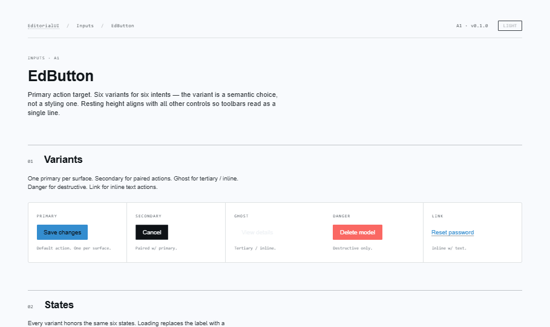
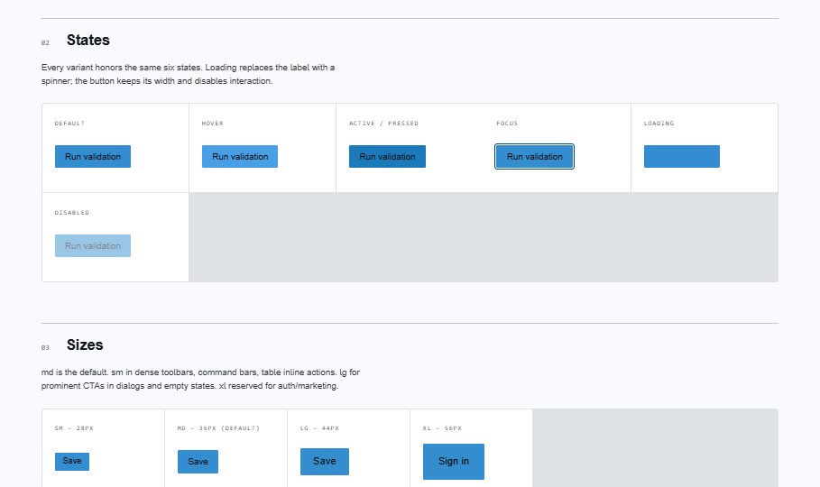
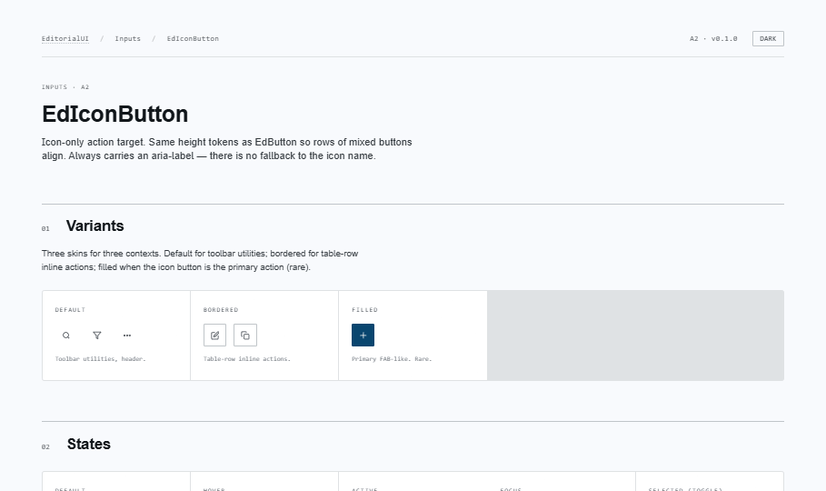
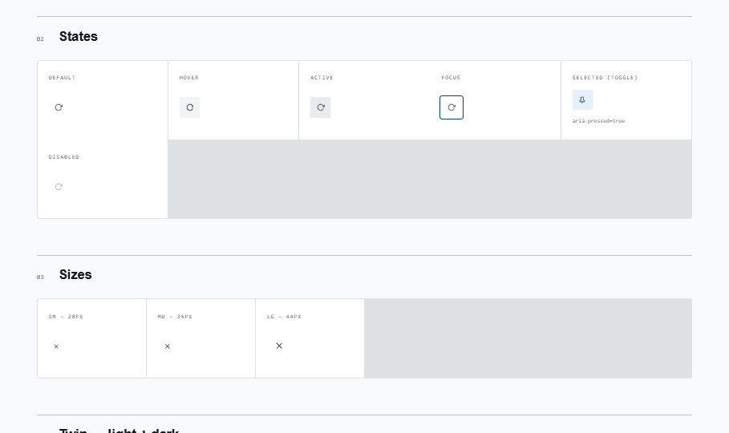
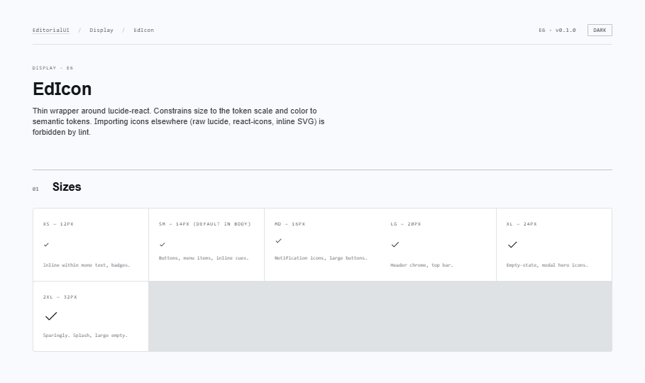
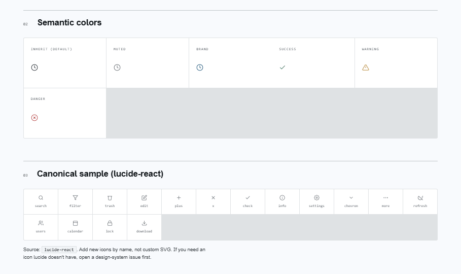

EditorialUI · Implementation
Tokens plus three primitives that everything else builds on:
EdIcon, EdButton, EdIconButton. Ready to
drop into Prodicus.Api/ClientApp/src/.
apostlerisk cleanly. Includes drop locations, deps, conventions, and the success checklist.
open ↗
Primary action target. Five variants × four sizes, with loading, leadingIcon/trailingIcon, and asChild (Radix Slot) for styled anchors.


Icon-only action target. Three variants (default, bordered, filled) × three sizes. aria-label is a required prop at the type level. Optional pressed for toggle behaviour with aria-pressed.


lucide-react wrapper. Six token-driven sizes, nine semantic colors. Decorative by default; pass label to make it meaningful (role="img"). The only sanctioned icon component in EditorialUI — ESLint should block react-icons from this folder.


lucide-reactThe single sanctioned icon family. Behind EdIcon.@radix-ui/react-slotEdButton.asChild for rendering <a> as a styled button.Ed* prefixCoexistence with ProdicusUI. Prefix is how each call site signals which library it's on.src/components/EditorialUI/<Component>/Mirror of ProdicusUI/. One folder per public component.EditorialUI/<Group>/<Component>Group names match the 7 spec groups: Inputs, Selection, Display, Feedback, Containers, Navigation, Data.--ed-* properties from tokens-v2.scss. Stylelint enforces.[data-theme="dark"]Every --ed-* token has a dark counterpart. Don't invert.EdTextField, EdPasswordInput, EdCheckbox,
EdRadioGroup, EdSwitch, EdFormControlLabel.
Same shape, same conventions, builds on the tokens + EdIcon + EdIconButton from this bundle.